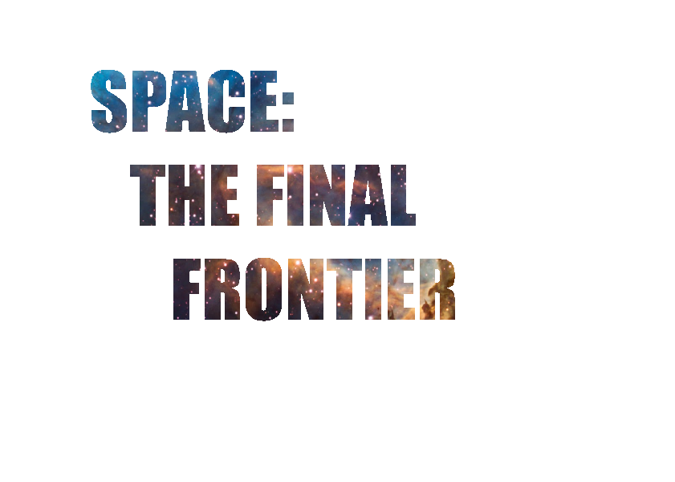
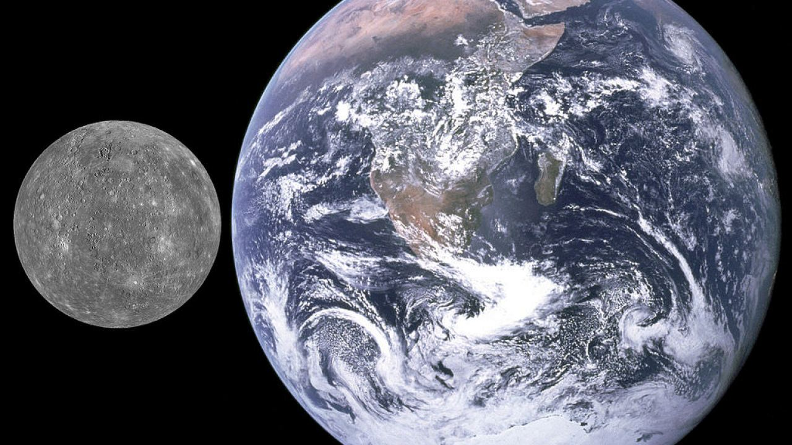
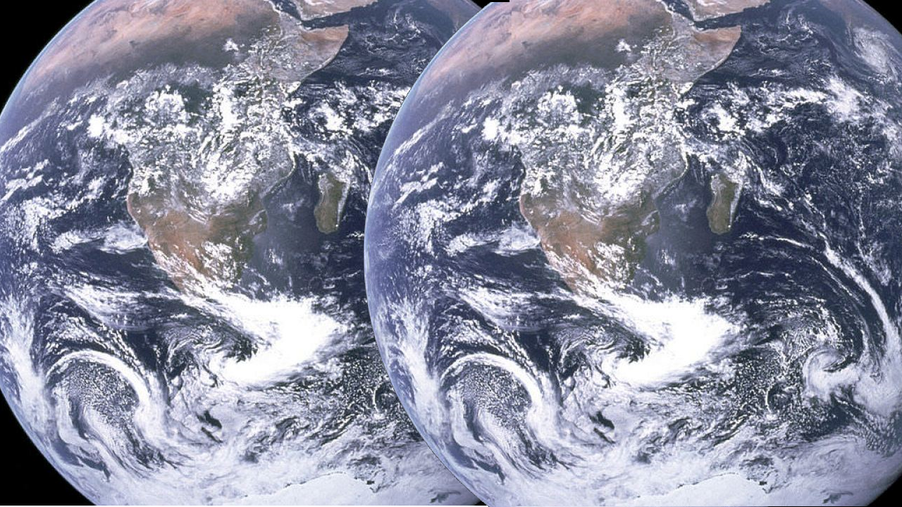
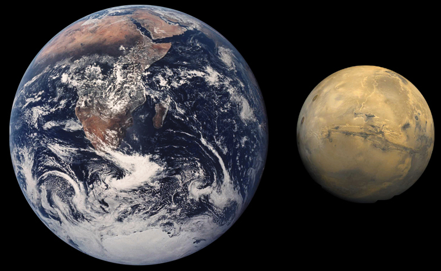
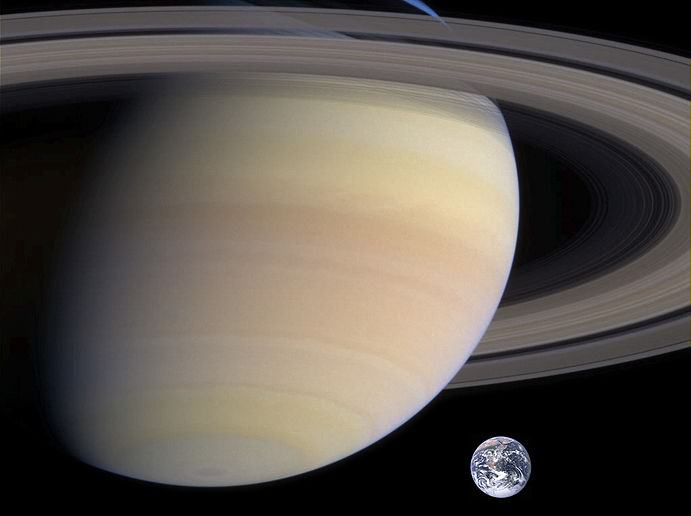

TOP SECRET.
TIME UNTIL LOCK OUT:
CASE FILES ON SOLAR SYSTEM Sol-1 α78. NOT TO BE READ BY HUMANS.
DO NOT REMOVE FROM BREIFING ROOM 1-08b5
THE PLANETS
The universe is big. And as life gets bigger we look to the skys in hope of finding worlds like ours.
And while deep space is big and full of promise, perhaps our future lies in our very own solar system...

MERCURY
DISTANCE
Mercury is 56.909 MILLION kilometers from Sol-1!
COMPARISION
In comparision to the planet TERRA-1...
 It looks like this!
MOONS
Mercury in total has a WHOOPING! ZERO MOONS! *omygosh*. No moons formed in the creation of the planet or in it's early life.
YEAR LENGTH & DAY LENGTH
Mercury takes 87.97 earth days to orbit the star we call the Sol-1. Sitting at the slightest angle (about 1⁄30 degree) It rotates three times on it's axis every two revoltions around the sun. It's days take 58d 15h 30m (TERRA-1 time). Day length is 1,408 hours thanks to it's slow rotation and orbit speed
WEATHER
Up in pretty much everywhere we're getting a cool 420 degrees, At night time we're expecting some chilly winds coming in from space-east and it'll drop down to about -180 degrees celsius. With a slight chance of atomic radition coming in from Sol-1 and harsh winds on the dark side, and the atmoshpere rather thin this millennia you can expect to keep those turbans/ski clothes on for another eon or so. That's weather.
PLANET MAKEUP
From space mercury's surface appears very similer to LUNA-1 orbiting the planet TERRA-1. It has lots of craters and harsh plains of rock and dust. The varietys of these plains range from smooth rolling hilly plains to harsh jagged rocks.
LIFE
While new evidence emerged in March 2020 about habitable life being possible, for a period of 1200 years, don't get your hopes up because most likely all that was every formed (if any) was microscopic organisms (probaly single celled)
VENUS
INTRO
Venus is a strange planet to say the least. Next to TERRA-1, it could have been at one point been it's twin. Now, it's a rocky dusty wasteland in which nothing can survive.
DISTANCE
Venus is 108.31 million km from Sol-1. As second closest it gets a lot of Sun you could say. heh heh
Venus is slightly smaller then terra but realivly the same size. In terms of comparision for sake of aurgument they are pretty much the same size. Heres is a side by side comparision.
.jpg)
Apolgies for the blurrynes, I had to blow the image up because it was smaller than the others. But as a side by side comparision you could see that perhaps at one point (trillions of years ago) Venus might have been in a goldy-locks zone (Not-too hot not-too cold as the humans call it) and life may have formed then died out.
MOONS
Venus also has no moons like mercury (possibly because of the gravity of the sun). It has no rings, no sattiliets. Nothing. Dead space. If venus could harbor life or water there would be nethier tide nor waves in it's oceans (if any).
DAY AND YEAR LENGTH
It takes 255 terra days to orbit sol-1 and it's day length is 116 terra days 18 hours and 0 minutes.
AVERAGE TEMPERTURE
The tempture of the planet is on average 864 degrees Fahrenheit (462 degrees Celsius) year round. It has a thin atmosphere trapping greenhouse gasses heating up the planet further (not unlike earth in the future if we keep with the rate of gass emmisions). So even the cold side is hot.
MAKEUP
Beneath the thick atmosphere unlike mercury, the planet is smooth and un-scarred. It is made of hard pressed rock.
Although Venus is similar to the Earth in size and mass, its surface and atmosphere differ from our planet. Resurfacing in the planet's past may have created a solid crust, and the hidden core remains a challenge to study.
Shrouded by a thick atmosphere, the surface of Venus remained hidden until radar equipment arrived to probe the closest planet. Rocky ground lies beneath the layers of clouds. But unlike Mars and Mercury, which are both scarred by craters, Venus has a relatively smooth surface.
Early in the history of the solar system, while planets such as Venus were forming, the cloud of dust and rock orbiting the sun was a chaotic place. Giant rocks pounded the surface of the newly created planets and their moons. So how did Venus escape unscathed? While Venus could have been extraordinarily lucky and missed any significant damage in the turbulent young system, it is more likely that the surface of Venus has been completely redone by volcanic activity, smoothing over the scars of its early life. The planet has significantly more volcanoes than Earth, several of them the size of Earth's largest system, the Big Island of Hawaii!!!
CAN LIFE EXIST?
Out of all the planets venus is the most likely to be one that sustained life, however it is overlooked in the pursuit of a candaite for a new home, due to it's tempture, planet makeup, density of volcanoes and the gravity. The only thing this planet could offer in the way of life is archeolgy, because life may have existed, but it surely won't exist again.
EARTH Or TERRA-1
INTRO
TERRA-1 is the third most planet in the solar system. While life has been proven to exist (See probe ARCHER) it is still very primitive and not likely to be of any use for at least 500-2 billion years. The local life forms humans (pro:/ˈhjuːmən/ ) have a rich and unique culture. The only life forms in the universe to lob exticion event bombs at each other because of culutral dispute (See world war 2 ((yes there is two))). Humans have named all their local planets (hence why we've borrowed them) after their gods. They have named most of their nearby space objects excluding Sol-1, LUNA-1 and TERRA-1 along with some dwarf planets which they respectivly refer to as; The Sun, The Moon and The Earth. They rather dislike visters and aren't all that friendly (fueled by popular media depicting visitors as hostile, resource consuming monsters, which we are not) and capture and detain most of our scout missions. Altough they have come far in the past hundred years or so, some still belive stupid theorys such as; The eath is flat, The sun revolves around TERRA-1, Space doesn't exist and stars are just airholes poked in the top of the container and Donald J Trump is vegan. Bullocks of course, but still quite funny.
COMPARISION
In comparision to the... EARTH! The EARTH looks like this!

MOONS
TERRA-1 has a singular small moon known as LUNA-1 (Refered to by humans as, The Moon) It is rather rocky and cratery. A popular theory is that when TERRA-1 was forming a part broke off and became LUNA-1. Sevral missions have been sent to the moons by the humans and they have even sent some canis, felis and Mus musculus up there too. Some humans have set foot on the moon and left a flag there. (U.S.A! U.S.A!) This was the first space object other than TERRA-1 they have every set foot on. Though they haven't been back in a couple decades, which strikes debate as to how they managed to get there in the first place with inferior tech than now with advanced tech? (See crazy theorys [1] ) Plans have been drafted and it is possible humans are planning to terra-form (See [2] ) LUNA-1 and turn it into a mini TERRA-1. Because it has no atmosphere what so ever there aren't any toxic chemicals to get rid of (what a waste, we rather think helium and C02 is quite nice) and it's easy to fill it's atmosphere with oxegyne. There is no pressure, because no atmosphere, so they would need to raise the Psi to about one bar. They would also have to make man made lakes and oceans in order for life to be sustained. If they plan on terra-forming mars they should test it on the moon first.
DISTANCE
TERRA-1 sits at about 151.22 million km from the sun. It is second in line from the star as well. It's orbit takes 365 1/4 to comletly obit the star (which humans refer to as a year) eachday is made up of a 24hr cycle as the planet spins on it's axis.
YEAR LENGTH
Year length is 365 days and 1/4.
DAY LENGTH
Day length is 24hrs.
WEATHER
In the 20th century the average tempture is 13.9°C (57.0°F) across all land masses
PLANET MAKEUP
TERRA-1 has huge oceans and little land mass. It has rocky, smoot, grassy, muddy terrain all around the planet. The weather patterns are incredibly complex and strange and a single continet can have hundreds of diffrent weather zones and time zones.
LIFE
Life does exist in many diffrent forms (most notable the chipmunk, god they're cute.). Humans are the only sentaint life forms in this solar system. Life was formed from vents on the surface of the ocean Panthalassa, also known as the Panthalassic Ocean or Panthalassan Ocean (from Greek πᾶν "all" and θάλασσα "sea"), was the superocean that surrounded the supercontinent Pangaea. The early life forms fed on the heat and bio-soup that spewed from these vents. Soon life learned to eat sunlight, a skill we could possibly use, and plants were born. Others grew legs and climbed out of the ocean. They shot big white things out of their butts to reproduce. And then a spaceship (Exocidis-7b) crashed into the planet and BOOM thats the end of the dinosaurs. After the false start life reformed and now their reproduction systems are gross and dangly.
MARS
INTRO
The red planet has a lot to offer. Good mining, stratigic if humans ever plan on colonizing, really a bit of everything. Fun fact: what gives mars it's red look is all the iron on the surface rusting and forming a red color as it breaks down. Really it's quite rocky and plain, but full of resources.
DISTANCE
Mars orbits Sol-1. Mars is the fourth planet from the Sun at an average distance of about 228 million km (142 million miles). Behind earth it can ocasionally be seen in the night sky. Apart from this not much can be said about it's distance realtive to Sol-1.
COMPARISION
Compared to terra it is smaller. (see picture) A good portion of mars's surface area could fit in asia.

MOONS
With two moons, Phobos and Deimos, nothing more than barren astriods. Deimos takes 30 hours to orbit mars and has a gravitantional feild of 0.002 m/s2. It's distance to earth is 77.79 million km, and it's surface area is 495.1548 km2. Temperture wise is is about 233 degrees Kelvin. Phobos is the closest natural satellite and has a radius of 11.267 km, Gravity of 0.0057 m/s2 a surface area of 1548.3 km2. Nothin much about these moons stand out exepct as a possible mars base deployment staition.
YEAR AND DAY LENGTH
It take 685 terra days to orbit Sol-1, and the length of a marshian day is 1d 0h 37m.
AVERAGE TEMPERTURE
They range from -82 degrees F in the summer to -220 degrees F in the winter. Chilly place. Burrr...!
PLANET MAKEUP
Mars is the "Red Planet" for a very good reason: its surface is made of a thick layer of oxidized iron dust and rocks of the same color. Maybe another name for Mars could be "Rusty." But the ruddy surface does not tell the whole story of the composition of this world.
The dust that covers the surface of Mars is fine like talcum powder. Beneath the layer of dust, the Martian crust consists mostly of volcanic basalt rock. The soil of Mars also holds nutrients such as sodium, potassium, chloride and magnesium. The crust is between 6 and 30 miles (10 and 50 kilometers) thick, according to NASA (the human's version of GELGA).
Mars' crust is thought to be one piece. Unlike Terra, the red planet has no tectonic plates that ride on the mantle to reshape the terrain. Since there is little to no movement in the crust, molten rock flowed to the surface at the same point for successive eruptions, building up into the huge volcanoes that dot the Martian surface.
LIFE
Mars is probally our best bet for finding microscopic lifeforms. Any life that may have formed would have to cope with the radiation from the sun and the core (possibly by living in unerground lakes) Possible fossils have already been found and are being examianed for life.
JUIPITER
INTRO
Juipiter is a gass gaint wich means although it is a planet, and has a gravitantional field, it doesn''t have a solid core, it's all gass. It contains gasses useful for terra-forming which means when humans inevitably decided to terraform mars, they would probaly get the resoures from Juipiter.
DISTANCE
Juipiter is 778 million kilometers or 5.2 AU (If you are a sceince nerd.)
SIZE
As largest planet in the solar system (rightfully deserving that title,) it is much, much, MUCH bigger than the earth. See image for comparision. This truly puts to scale just how MASSIVEM juipiter really is.

MOONS
As there ar 72!! Moons of juipiter I cannot provide an indepth explaination nor a list of them due to the high amount of them. However most of them were attracted by the gravity from the huge planet from the astroid belt in the early creation of the universe. Many are rocky, but some are intresting such as IO which house preasiouces metels.
DAY AND YEAR LENGTH
It takes twelve earth years to orbit Sol-1 (Hard to even imagine something as large as jupiter ever moving. It take 0d 9h 56m to complete a full rotation on it's axis.
TEMPERTURE
With an average temperature of minus 234 degrees Fahrenheit (minus 145 degrees Celsius), Jupiter is frigid even in its warmest weather. Unlike Earth, whose temperature varies as one moves closer to or farther from the equator, Jupiter's temperature depends more on height above the surface.
PLANET MAKEUP
Jupiter is made up predominantly of hydrogen. The simple, basic gas, a prime ingredient on the sun, accounts for 90 percent of the atmosphere. Nearly 10 percent is composed of helium. A very small fraction of the atmosphere is made up of compounds such as ammonia, sulfur, methane, and water vapor.
LIFE
It would be cool to think of flying lifeforms darting in and out of the clouds, never touching solid ground, and giving birth and dying in the clouds of hydrogyn and other noble gasses. But that mostly lies in the realm of sci-fi, but shapes and forms have been seen darting in and out of the stratosphere by probes, most likely just peices of rock whipped around the planet by it's forceful wind speeds. But who knows perhaps there is life in the clouds of the biggest planet...
SATURN
INTRO
The ringed planet. Mysterious. Silent and still. A noble gass gaint of a long lost age of the universe. This planet has seen more than the earth. And will out live it too.
DISTANCE
Saturn is the sixth planet from Sol-1 and orbits at a distance of about 886 million miles (1.4 billion kilometers). As sixth it is an icy world without much sun.
As a gass gaint saturn is much bigger than TERRA-1. The earth is tiny compared to the massive volume of the planet.

MOONS
Saturn has 82 moons, nothing to scoff at. Fifty-three moons are confirmed and named and another 29 moons need people to actually check if they exist or not and then name them. Saturn's moons range in size from larger than the planet Mercury — the giant moon Titan — to as small as a human recreation games arena. Saturn also has a huge gravitational feild (like juipiter) and likely attracted debris and astroids from the kuiper belt.
DAY AND YEAR LENGTH
It takes saturn 29 terra years to orbit Sol-1. and each day is 10 hours and 42 minutes, a bit under half a earth day. It's seasons must be long. Imagine living you whole life only to see 12 seasons!
AVERAGE TEMPERTURE
With an average temperature of minus 288 degrees Fahrenheit (minus 178 degrees Celsius) Saturn is cold and icy, with frozen gasses in it's atmosphere. It hardly ever gets any sun and because of it's orbit speed it's usualy is winter or summer of fall or spring for years at a time. If you're planning a family get away to Saturn you better pack something warm (and solid ground)
PLANET MAKEUP
The gas giant Saturn contains many of the same components as most basic suns. Although it is this solar system's second largest planet, it lacks the necessary mass to undergo the fusion needed to power a star. Still, its gaseous composition — and the stunningly beautiful rings that surround it — make it one of the more interesting object in this solar system. Saturn is predominantly composed of hydrogen and helium, the two basic gases of the universe. The planet also bears traces of ices containing ammonia, methane, and water. Unlike the rocky terrestrial planets, gas giants such as Saturn lack the layered crust-mantle-core structure, because they formed differently from their rocky siblings.
LIFE
Saturn's environment is not conducive to life as we know it. The temperatures, pressures and materials that characterize this planet are most likely too extreme and volatile for organisms to adapt to. While planet Saturn is an unlikely place for living things to take hold, the same is not true of some of its many moons. Satellites like Enceladus and Titan, home to internal oceans, could possibly support life.
URANUS
THE ULTIMATE HUMAN TROLL